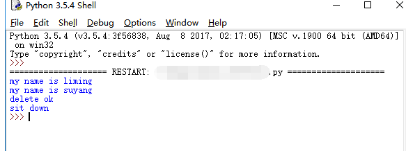
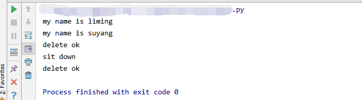

原文出处:本文由博客园博主翼风语提供。
原文连接:https://www.cnblogs.com/yifengyu/p/11213217.html
原文连接:https://www.cnblogs.com/yifengyu/p/11213217.html
最近在熟悉Python的class类的时候，无意中发现同样的代码，在pycharm和IDLE中结果不同，闲话少说先上代码：


1 class aa():
2 def __init__(self,name):
3 print("my name is %s" % name)
4 def __del__(self):
5 print("delete ok")
6 def sit(self):
7 print('sit down')
8 if __name__ =="__main__":
9 a = aa("liming")
10 b = aa('suyang')
11 del a
12 b.sit()IDLE中的结果：

Pycharm中的结果：

可以看出pycharm中的 __del__方法被调用了两次。百度了一波发现了原因：
IDLE：是Python安装后自带的编译器，是交互模式没有回收实例。
pycharm：是一套优化后编译器运行后会释放资源，所以会自动触发__del__回收所有创建的实例。另外pycharm的debug模式不会自动触发回收机制，运行结果与IDLE一致。
最后：如果不想让pycharm中__del__内容多次打印的话，建议自定义del方法，这样就可以避免del的内容多次显示